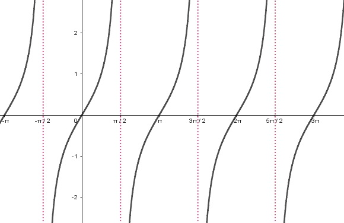

Otras funciones trigonométricas que debemos tener presente son aquellas definidas en términos de cociente o recíproco de las funciones seno y coseno, como lo son la función tangente, cotangente, cosecante y secante.
$\tan(x)=\dfrac{\text{sen}(x)}{\cos(x)}$
$\cot(x)=\dfrac{\cos(x)}{\text{sen}(x)}$
$\csc(x)=\dfrac{1}{\text{sen}(x)}$
$\sec(x)=\dfrac{1}{\cos(x)}$
Los números que hacen cero lo denominadores de estas funciones, corresponden a asíntotas verticales de sus gráficas. En caso de las fuciones tangente y secante, las asíntotas corresponden a $x=\pm\dfrac{\pi}{2}$, $x=\pm\dfrac{3\pi}{2}$ , $x=\pm\dfrac{5\pi}{2}$, ... En caso de las funciones cotangente y cosecante se tiene que las asíntotas verticales se dan en $x=\pm\pi$, $x=\pm 2\pi$, $x=\pm3\pi$,...
|  | |
| Figura 3. $\tan(x)$ | Figura 4. $\cot(x)$ |
| Figura 5. $\csc(x)$ | Figura 6. $\sec(x)$ |